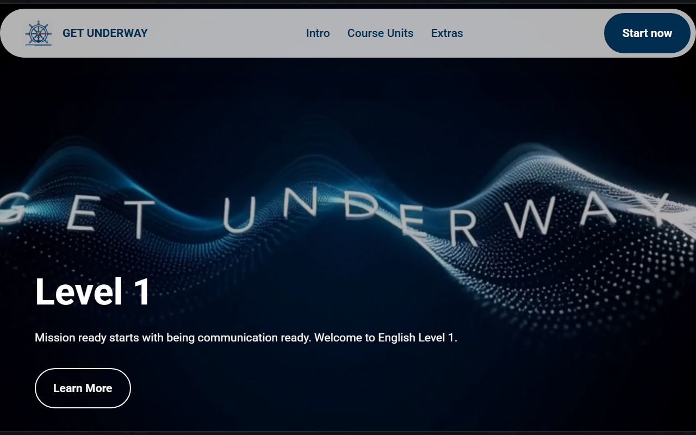

Flagship · e-Learning Platform
English for the Colombian National Navy
Complete English course for the National Navy: 10 general levels plus specialised modules in military and maritime English, built for real operational training.
- Subject-matter expert in military and maritime English
- LMS administration & instructional design of all 10 levels
- Complete SCORM packaging
